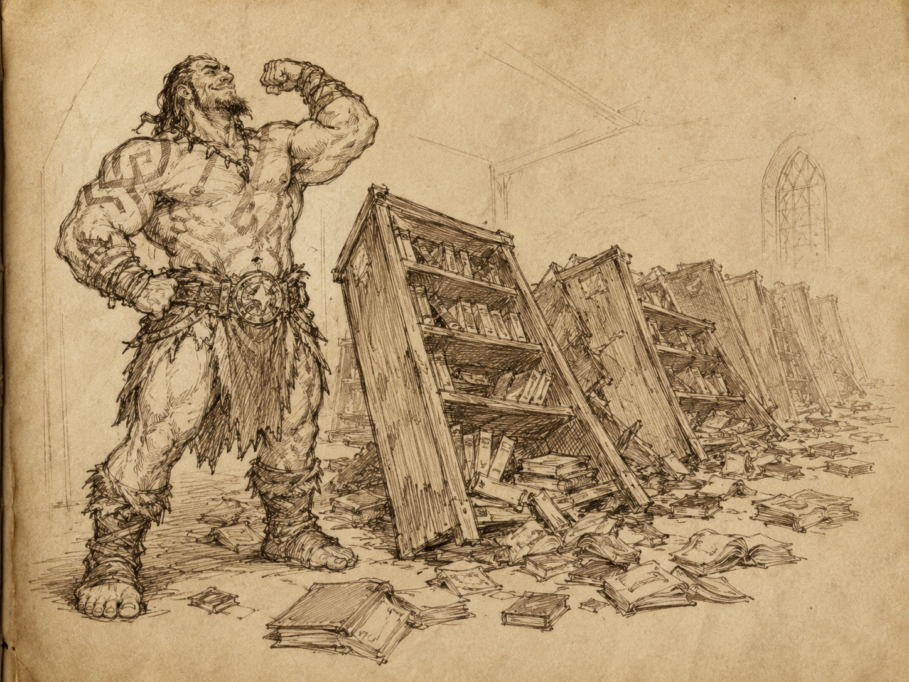

Journal de l'Aventurier
Jour 1
Recrutement à Millburgh
Rajouter une introduction qui claque.
Rencontres & négociations fructueusess
Entretien avec le patron de la Guilde du Tournoi.
Début défavorable.
Il tentait clairement de me raccompagner dehors.
Renversement honorable : après discussion, reformulation, et emploi mesuré du charisme naturel, je l’ai raccompagné lui-même jusqu’à la porte. Porte fermée. Situation clarifiée.
Il est revenu, confus.
Je lui ai rappelé qu’il venait de sélectionner mon groupe pour la mission. Il a semblé presque convaincu avant même que je termine la phrase.
Groupe désigné sur-le-champ
- Leoril, elfe sorcier. Silencieux, présentable, probablement utile.
- Raeggor, goliath guerrier. Force impressionnante. Voue un culte manifeste à Grégor "Longscar" Goathoof.
- Betty, gnome voleur. Homme. Petit. Suspect de naissance.
Les trois ont compris assez vite qu’il valait mieux jouer le jeu. Bon signe.
Note : le nom du groupe reste à trouver. Éviter “Cassian et les autres” dans un premier temps. Trop évident.
Signature des papiers dans le bureau du chef.
Raeggor a signé d’une croix.
Pas une mauvaise croix, en vérité. Sobre. Engagée. Définitive.
Pendant les discussions administratives, il a fallu canaliser son attention. Illusion de papillons. Succès complet.
Note scénique : un goliath suivant des papillons illusoires — image forte. À réutiliser dans la saga, mais en remplaçant peut-être les papillons par des esprits de guerre pour préserver sa dignité.
Présentation de la mission aux archives par Dace Rindack, mage local de la Guilde.
Départ demain à l’aube.
Objectif : reconnaissance d’une zone prévue pour le futur Tournoi. Vérifier les dangers, préparer les épreuves, éviter que les organisateurs ne meurent avant les participants.
Raeggor a voulu prendre une pose héroïque.
Résultat : plusieurs étagères renversées.
Archives en désordre.
Assistance au rangement, après inspection nécessaire du contenu tombé.
Découverte d’un livre de comptes. Ligne intéressante. J’ai signalé, avec toute la surprise requise, que la Guilde semblait devoir de l’argent à mon père.
Faux, probablement.
Crédible, absolument.

Note : penser à inventer un prénom au père avant que quelqu’un pose la question.
Fin de journée. Compagnie formée. Mission obtenue. Contrats signés. Archives partiellement vaincues. Départ à l’aube.
— Lord Vael